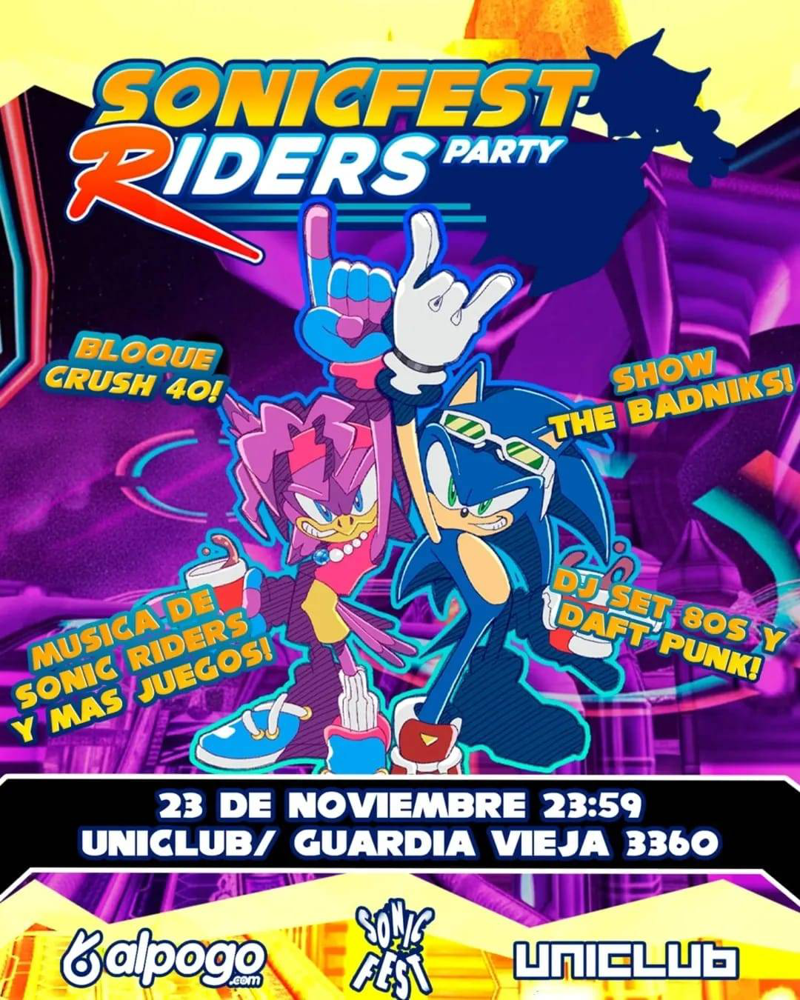

INSTAGRAM SONIC FEST
CONOCER SONIQUER@S PARA ARMAR GRUPOS, HACER PREVIAS Y MÁS
INSTAGRAM SONIC FEST
CONOCER SONIQUER@S PARA ARMAR GRUPOS, HACER PREVIAS Y MÁS
 DISCORD SONIC FEST
DISCORD SONIC FEST
EVENTOS TEMÁTICOS DE SONIC EN ARGENTINA 🇦🇷. CONVENCIONES PARA TODAS LAS EDADES, Y BOLICHES +18
🎟️COMPRAR ENTRADAS SONIC FEST RIDERS PARTY 23/11 +18🎟️  INSTAGRAM SONIC FEST
CONOCER SONIQUER@S PARA ARMAR GRUPOS, HACER PREVIAS Y MÁS
DISCORD SONIC FEST
En construcción
SÍ, EN TODOS NUESTRAS FIESTAS SIEMPRE HUBO, HAY Y HABRÁ PERSONAL DE SEGURIDAD DESTINADO AL RESGUARDO DE LOS ASISTENTES, PROVISTO Y SUPERVISADO POR EL ESTABLECIMIENTO DONDE SE REALIZA LA SONIC FEST. HAY CONTROL EN PUERTA Y DENTRO. SI OCURRIÓ ALGÚN PROBLEMA O NOTÁS ALGUIEN SOSPECHOSO O QUE NO DEBERÍA ESTAR, O SI TENÉS UNA DENUNCIA A UNA PERSONA POR TEMAS LEGALES, PRESENTALO AL PERSONAL DE SEGURIDAD, QUIENES SON LOS RESPONSABLES DE PODER ECHARLO.
SÍ! SALÍ ANTES DE TU CASA Y HACÉ LA PREVIA EN EL SHOPPING ABASTO, A UNA CUADRA DEL SALÓN. CONOCÉ Y COORDINÁ CON LOS ASISTENTES UNIÉNDOTE A NUESTRO DISCORD MÁS ARRIBA.
SÍ, SIEMPRE. PODÉS GUARDAR TU MOCHILA O TU CAMPERA. LLEVÁ EFECTIVO PARA PAGARLO.
TENÉS QUE TENER EL DNI Y SER MAYOR DE 18 AÑOS. SI NO TENÉS EL DNI, SIRVE EL DNI DIGITAL ÚNICAMENTE DESDE LA APP MI ARGENTINA. SI VENÍS DE OTRO PAÍS, EL PASAPORTE O DOCUMENTO DE IDENTIDAD EQUIVALENTE SIRVE.
POR SUPUESTO! LOS COSPLAYERS SON BIENVENIDOS. TAMBIÉN PODES VENIR CON TU ACCESORIO! TRAÉ TU PELUCHE, EXTREME GEAR CASERA, O UNA ESPADA EXCALIBUR IMPRESA EN 3D. NO PUEDE SER OBJETO PUNZANTE O HERRAMIENTAS PELIGROSAS. PODÉS VESTIRTE COMO QUIERAS. COPATE Y TRAE TU COSPLAY O REMERA DE SONIC!
NO. EN EL CONTROL DE MOCHILAS SE RETIRAN COMIDAS, BEBIDAS O CUBIERTOS. DENTRO DEL EVENTO HAY OPCIONES GASTRONÓMICAS.
NO SE SUSPENDE POR CONDICIONES CLIMÁTICAS. ES EN UN SALÓN, NO AL AIRE LIBRE.